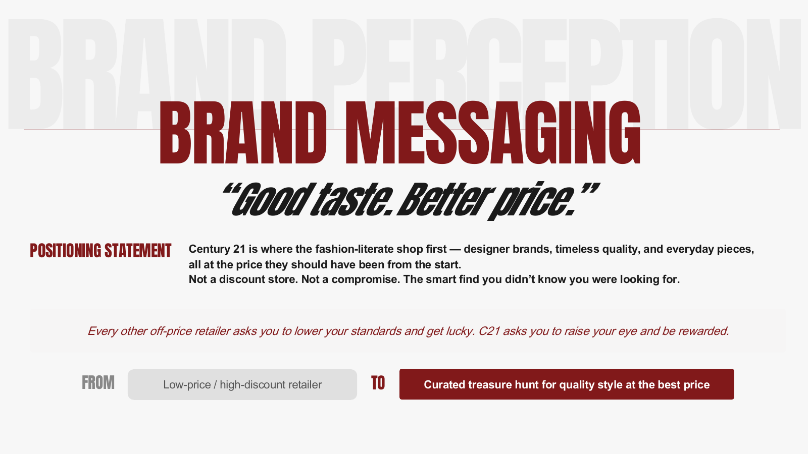
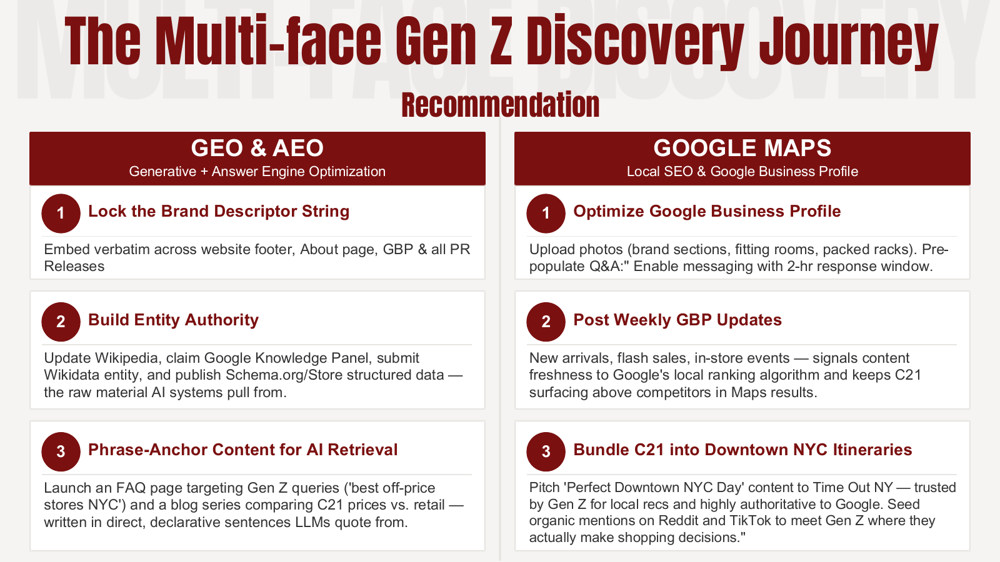
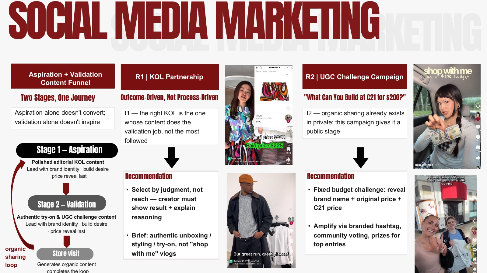

The brief: figure out what it actually takes to convert a Gen Z or young Millennial into a Century 21 shopper, and build a repeatable blueprint for it. We ran 8 semi-structured interviews (63% existing C21 shoppers, 37% off-price shoppers who don't shop C21) and 7 moderated focus groups with Gen Z Columbia students who'd never shopped there.
The core finding: Gen Z's negative image of C21 wasn't built on bad experiences — most had never been inside — it was built on secondhand, outdated signals ("tourist spot," "chaotic shelves"). Mapped against Nordstrom Rack, Saks Off 5th, and TJ Maxx on a curated-vs-chaotic axis, C21 actually sat on unclaimed ground: broad range and curated discovery, a combination no competitor owned. That reframed the whole project from "fix a damaged brand" to "correctly introduce a brand nobody has actually met" — treat it as a launch, not a re-activation.
"Good taste. Better price." — moving C21 from "low-price/high-discount retailer" to "the curated treasure hunt for quality style at the best price."
From there, three workstreams: a GEO/AEO strategy addressing that Gen Z's actual path to a store visit starts with an AI query before anything else, so C21 needs to be named at that first AI-query stage or it's invisible for the rest of the journey; a KOL partnership framework built on the insight that C21 didn't have a content shortage, it had a content structure problem — shoppers already shared finds privately, creators already made authentic try-on content, nothing bridged the two into something public; and a social account architecture plus O2O loop addressing that the existing Instagram account's 20–50 daily Story frames were causing real cognitive overload.


